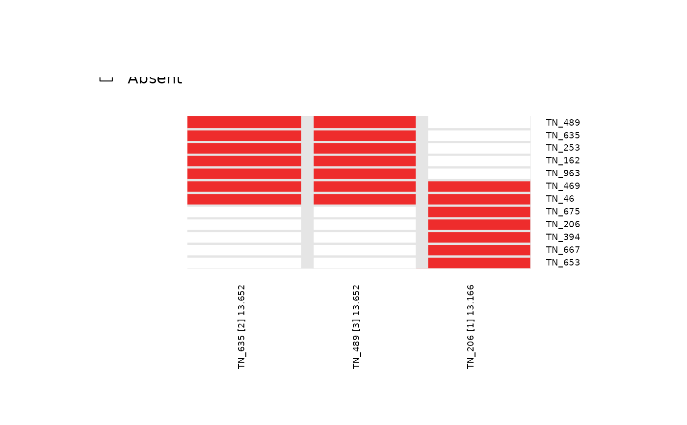

Generates and evaluates candidate search results for the top 'N' starting indices, checking for overlapping resulting features from each case. This function is mainly used to evaluate search results over the top 'N' best starting features for a given dataset.
topn_eval(
ES,
input_score,
method = "ks",
custom_function = NULL,
custom_parameters = NULL,
alternative = "less",
metric = "pval",
weights = NULL,
target_match = "positive",
top_N = 1,
search_method = "both",
max_size = 7,
best_score_only = TRUE,
do_plot = TRUE,
verbose = FALSE
)an expression set of binary features (required). It must be a BioBase expressionSet object. The rownames of the expression set must contain unique features which are used in the search.
a vector of continuous values for a target profile (required). The input_score must have names or labels that matches the colnames of the expression matrix.
a character string specifies a method to compute the score for each feature ("ks" or "wilcox" or "revealer" (conditional mutual information from REVEALER) or "custom" (a customized method)). Default is ks.
if method is "custom", specifies the customized function here. Default is NULL.
if method is "custom", specifies a list of arguments to be passed to the custom_function(). Default is NULL.
a character string specifies an alternative hypothesis testing ("two.sided" or "greater" or "less"). Default is less for left-skewed significance testing.
a character string specifies a metric to use for candidate search criteria. "pval" or "stat" may be used, corresponding to the score p-value or statistic. Default is pval.
a vector of weights use to perform a weighted-KS testing. Default is NULL.
a direction of target matching ("negative" or "positive") from REVEALER. Use "positive" to match the higher values of the target, "negative" to match the lower values. Default is positive.
an integer specifies the number of features to start the search over, starting from the top 'N' features in each case. Default is 1.
a character string specifies a method to filter out the best candidates ("forward" or "both"). Default is both (backward and forward).
an integer specifies a maximum size that a meta-feature can extend to do for a given search. Default is 7.
a logical value indicates whether or not the function should return only the score corresponding to the search results. Default is FALSE.
a logical value indicates whether or not to plot the resulting evaluation matrix. Default is TRUE.
a logical value indicates whether or not to print the diagnostic messages. Default is FALSE.
By default, this function will return a list of lists, where each list entry is one that is returned by the candidate search for a given starting index (See candidate_search()). If best_score_only is set to TRUE, only the best score over the top N space is returned (useful for permutation-based testing)
1's and 0's represent whether a feature in any given row is present in a meta-feature along with a starting feature in the corresponding column.
# Load R library
library(Biobase)
# Load pre-computed expression set
data(sim.ES)
# set seed
set.seed(123)
# Provide a vector of continuous scores for a target profile with names to each score value
input_score = rnorm(n = ncol(sim.ES))
names(input_score) <- colnames(sim.ES)
# Define additional parameters and run the function
topn_eval <- topn_eval(
ES = sim.ES, input_score = input_score, method = "ks",
alternative = "less", metric = "pval", top_N = 3, search_method = "both",
max_size = 7, best_score_only = FALSE
)
#> Generating top N overlap heatmap..
#>
